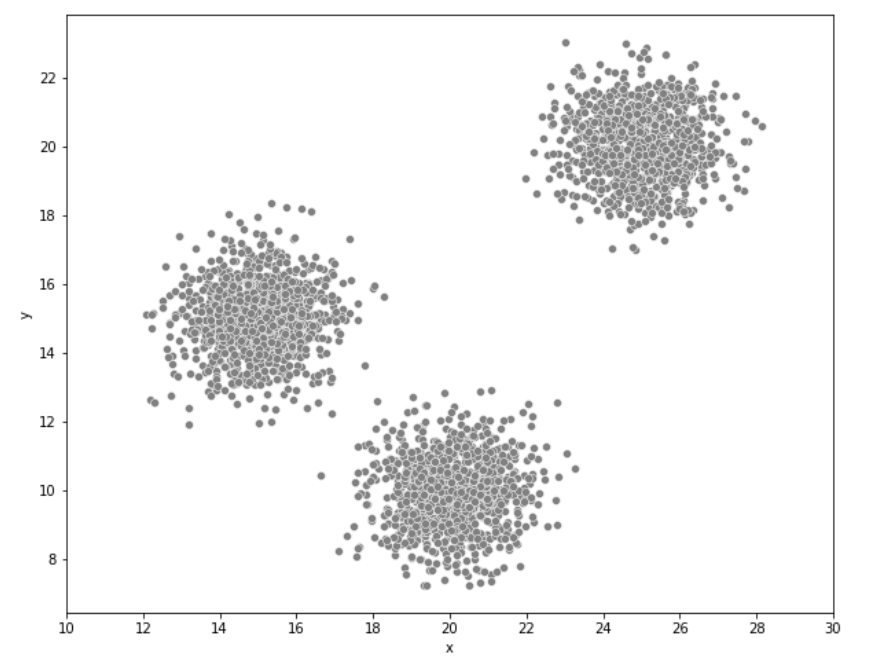
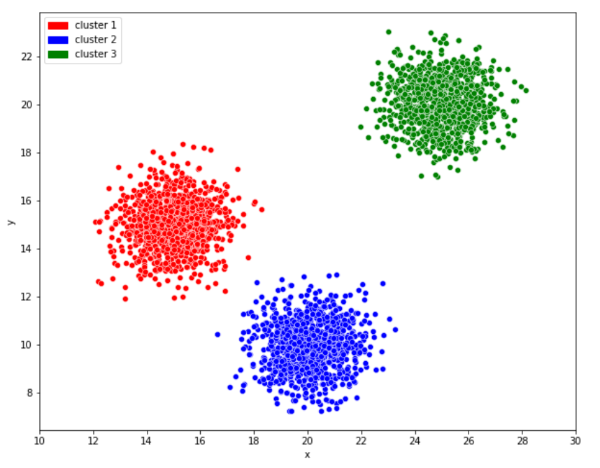
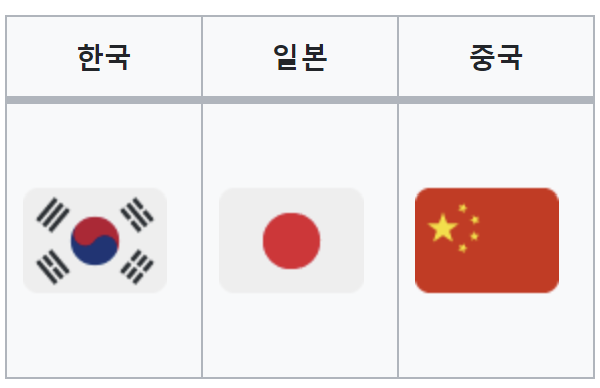
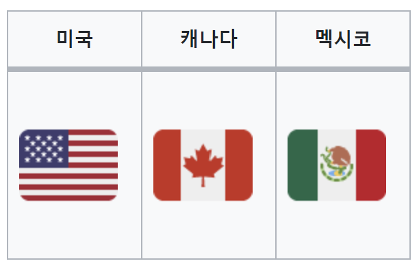
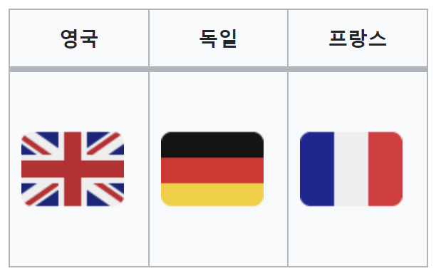
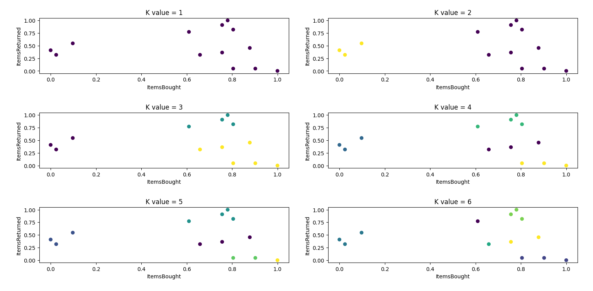
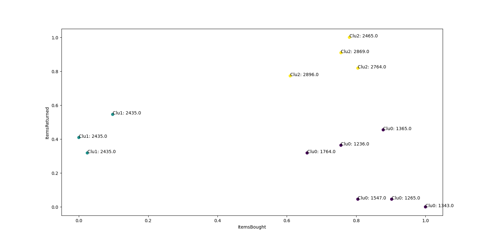
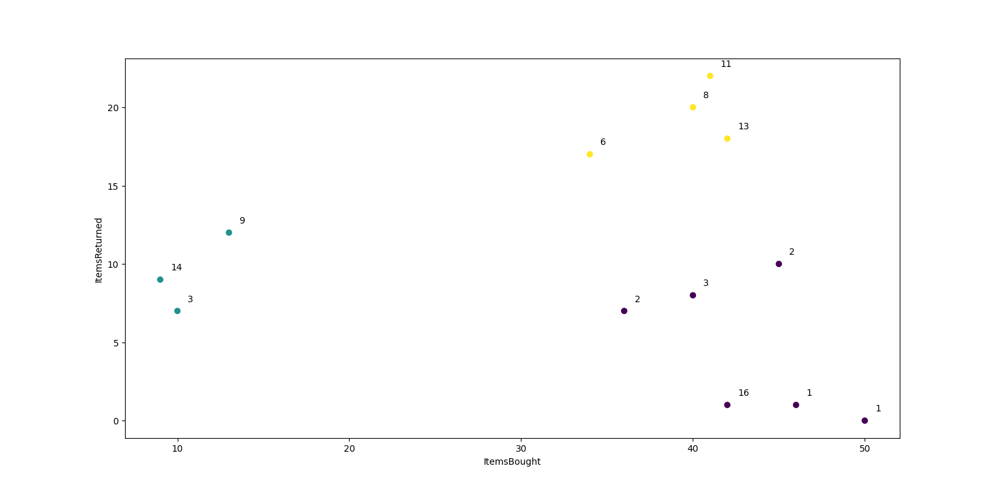

로그인
소개
Keep-Going은 K-평균 군집화를 이용하여 결과를 나타낼 수 있는 사이트입니다.K-평균 군집화
• K-평균 군집화란 K-Means Clustering으로 클러스터의 개수를 미리 정하여반복적으로 클러스터의 평균을 업데이트하며 가장 가까운 점들을 군집화하는 것이다.
• K-평균 알고리즘은 주어진 데이터 k개를 클러스터로 그룹화하는 비지도 학습 알고리즘이다.
K-means 알고리즘이란?
머신러닝 비지도학습에 속하는 K-means 알고리즘은 쉽게 말해 데이터를 K개의 군집(Cluster)으로 묶는(Clustering) 알고리즘이다.군집이란 쉽게 말해서 비슷한 특성을 지닌 데이터들을 모아놓은 그룹(Group)이다. 마찬가지로 군집화는 군집으로 묶는다는 의미로 해석할 수 있다.
K-means 알고리즘에서 K는 묶을 군집(클러스터)의 개수를 의미하고 means는 평균을 의미한다.
단어 그대로의 의미를 해석해보면 각 군집의 평균(mean)을 활용하여 K개의 군집으로 묶는다는 의미다.
여기서 평균(Means)이란 각 클러스터의 중심과 데이터들의 평균 거리를 의미한다.

대부분의 사람이라면 아래의 그림과 같이 3개의 군집으로 묶을 것이며 이는 K-means 알고리즘에서 K가 3인 경우에 속한다.

다시 말해, K-means 알고리즘은 비슷한 특성을 지닌 데이터들끼리 묶어 K개의 군집으로 군집화하는 대표적인 군집화 기법이다.
하지만 비슷한 특성을 지닌 데이터들끼리 묶는 방법은 여러 가지가 있을 수 있다.
예를 들어 한국, 일본, 중국, 미국, 캐나다, 멕시코, 영국, 독일, 프랑스 총 9개의 국가를 3개의 군집으로 군집화한다고 가정해보자.
이때 이 9개의 국가를 군집화하는 방법은 수 없이 많다. 모국어(제1언어)가 영어인 국가와 아닌 국가로 묶을 수도 있고,
날씨나 인구 수를 기준으로 군집화할 수도 있다. 하지만 K-means 알고리즘을 기반으로는 다음과 같이 군집화 될 것이다.
cluster1
cluster2
cluster3
결과를 보면 아시아 국가들끼리, 북아메리카 국가들끼리, 유럽 국가들끼리 총 3개의 군집으로 묶인 것을 알 수 있다.
이는 거리를 기반으로 군집화한 것이다. 즉, 가까운 나라일수록 비슷한 특성을 지닌 것으로 보고 같은 군집으로 묶은 것이다.
다시 말해, K-means 알고리즘은 가깝게 위치하는 데이터를 비슷한 특성을 지닌 데이터로 여기고 같은 군집으로 군집화한다.
위에서 보았던 그래프에서 점들을 빨간색, 파란색, 초록색, 이 3개의 군집으로 군집화한 것도 결국 거리가 가까운 데이터끼리 군집화한 것이다.
활동

K는 군집의 갯수
  